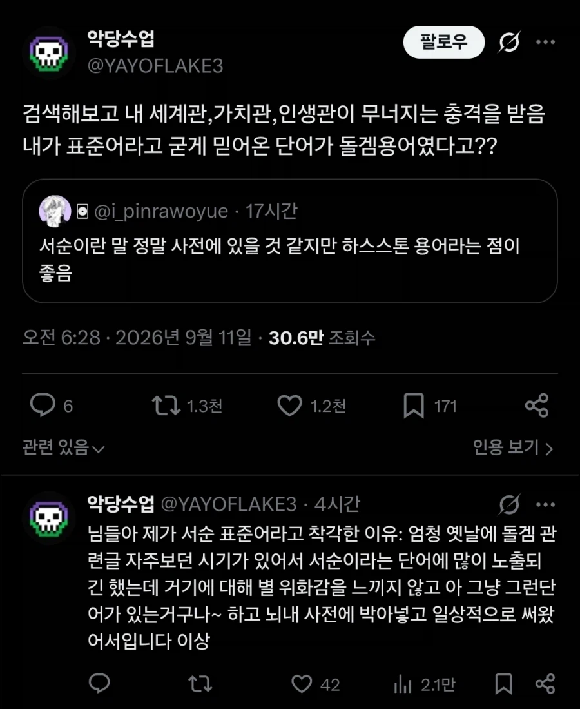
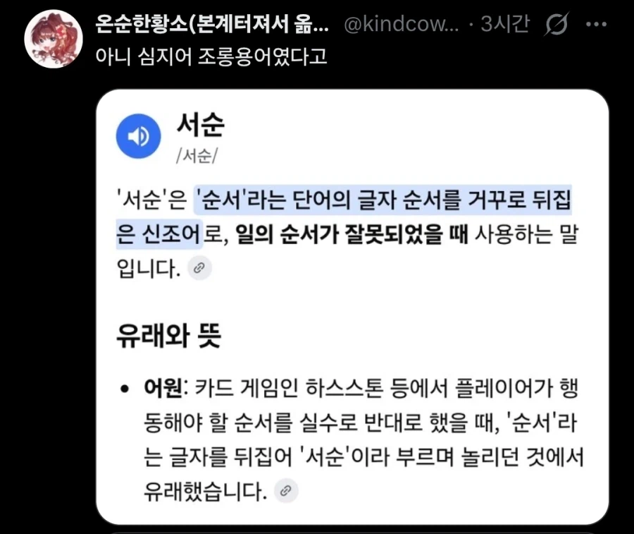
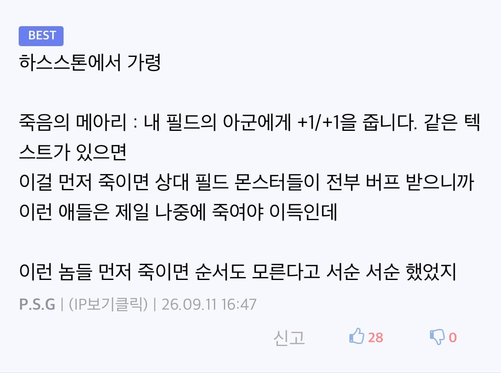

서순을 순서가 뒤집어졌다는 뜻으로 쓰고 있는건 또 처음 알았네
서술의 순서아니였음? 말한 내용들을 순서대로 나열하시오 혹은 서순에 따라 뭐뭐하시오 이렇게 문제에 자주 나왔는데
진짜 애지간히 책들 안읽었구나..
순서가 바뀌었다는 의미의 밈적으로 서순을 써본적도 없고, 여기서도 거의 본적없는것 같음
그냥 그들만 쓰는 다른 사람들은 그뭔씹 할만한 내수용 밈인거 같은데..
오히려 "서순에 맞게", "서순에 따라" 같이 그런 의미로 더 많이 본거 같고
하스스톤 출시 2014년이더만?
엉뚱한 학교폭력
정세근 <충북대 철학과 교수> 2012.03.08
미국에서는 학교폭력에 경찰이 적극적으로 나선다. 처음부터 경찰이 개입하는 것은 아니지만, 경고, 벌점, 학부모소환 등의 단계를 거쳐 마지막에는 경찰에 넘겨버린다. 경찰은 폭력학생을 나름의 서순에 따라 공원청소 등 봉사활동을 시키면서 교화에 협조한다.
https://www.cctimes.kr/news/articleView.html?idxno=278764
이 교수님은 단어 창작해서 2012년에 쓰심?
서순이란 글자의 단어는 원래 없던 단어고 하스스톤에서 나왔다는 주장이 왜 이렇게 열받냐 ㅋㅋㅋ
모를 순 있음 모르는건 죄가아님
근데 댓글보면 알겠지만 하스스톤 이전의 서순은 너의 기억조작이고 그런단어가 어딨냐고 오히려 정상적으로 알고있던사람들 비난하는게 어이가없음 ㅋㅋㅋㅋㅋ
즈그들끼리 쓰던 은어를 전국민이 이상하게 쓰고있었다고 비난 ㅋㅋㅋㅋ
진짜 궁금한건데 저 돌겜식 서순이라는 단어는 어디서 누가 씀? 살면서 저 용례로 쓰는걸 본적이 없는데
그냥 은어 수준 아님?
스트리머가 실수할때 '순서'라고 채팅창 도배됐음 스트리머가 순서라고 채팅 치지말라고 정색했는데 채팅창에서 한명이 서순 이라고 하니까 빵 터지고 지금까지 자리잡은걸로 알고있음
저거 인방에서나 쓰던말인데...
하스 방송하던 인방에서 나온 단어 아니었나
국평오답게 책도 안읽은 고졸편돌이노가다들 많네 ㅋㅋㅋ 어케 서순이 인방용어냐
원래 있고 잘만 쓰던 단어인데 뭔 게임용어라고 지랄병이냐?
뭔 이 개미친소리야
서순이 왜 게임용어야
옛날부터 아재들이 쓰던 말이야
서~순이 잘못됐다 이거야
서순이 인방용어로 돌겜 게임용어로 시작 된게 맞는데 아니라는 놈들은 뭐지? 표준어도 아니구만 능지가 ㅋㅋ
와... 단어 등재 안됐다고 서순이란 단어 자체가 어디 즈그들끼리 하는 변방겜에서 첨만들어졌다고 생각하는 사람들 많네 심각하다
넷상에서는 순서틀리면 나오는 채팅으로 하스 인방에서 첨쓴거 맞음ㅋㅋ 서순이라는 단어가 존재하는거랑 별개로
여기에 개발작하는 행님들은 인방안보는 분들인듯
https://msoffice.tistory.com/m/13754992
걍 검색만 해봐도 옛날부터 쓰이던 단어인걸 아는데 왜 이런 주작글을 쓰는걸까?
서순에 따라 라는 표현은 그냥 학창시절부터 시험에서 주구장창 보던 표현 아닌가?? 아니면 진짜 책도 안 읽고 공부도 안 했나??
표준어는 아니지만 '서순에 따라'를 모르면 진짜 걍 겜만하고 살았거나 어린애인거지 뭐
와 진짜 앞 페이지 댓글들 보니까 개열받는다ㅋㅋㅋ 지들이 공부 처안해가지고 모르는 표현을 마치 인방용어인걸 몰랐던 사람 만드네ㅋㅋㅋ
서순이 인터넷용어라니 환장하겠다ㅋㅋㅋ 너무 열받아서 이 글 한 번만 더 인기글로 올라가서 무식한놈들 최신 댓글들 좀 읽고 깨달았으면 좋겠다
그 서순 말고 순서 잘못해서 놀리려고 하는 서순은 돌껨에서 나온거 맞음
서순에 맞춰 고르시오.
신박하다
책말고 조롱의 의미로 커뮤에서 쓰는건 하스스톤 유례 의미지.
네이버 국어사전 검색결과
영국시인 이름밖에 안뜬다
유저가 올리는 오픈사전에는 카드순서 실수 지칭한다고 뜨고 ㅋㅋㅋ
니가맞니 내가맞니할꺼면 걍 사전검색이 편함